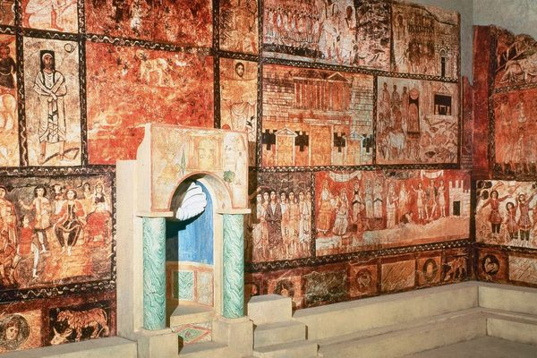
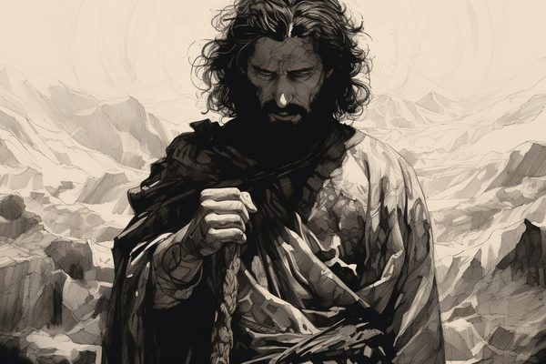
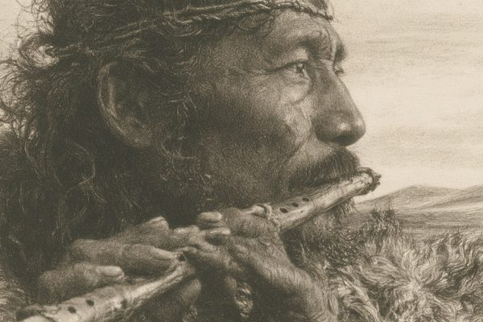

Призванный творить
Эфраим Калиш
Проект TORAART исследует библейский взгляд на творчество и художника: здесь представлены мидраши, материалы о библейских праздниках, разбор древнееврейских слов, артефакты, галереи и фильмы, созданные Эфраимом Калишем.
Новое на сайте

Библия и художник
Читать руками: иллюстрация как исследование Писания

Книги и арт-проекты
МУЗЫКАНТ. Йуваль, сын Лемеха. Аудиокнига

Книги и арт-проекты
Эфраим Калиш. «МУЗЫКАНТ. Йуваль, сын Лемеха»

Книги и арт-проекты
Эфраим Калиш. Книги о творчестве в Библии

Библия и художник
НАЗНАЧЕНА ДАТА ПРЕМЬЕРЫ / Армения ВОЗРОЖДЕНИЕ

Библия и художник